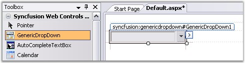
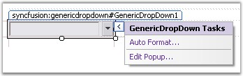

The generic control can be created at design time as follows.
1. Create a new ASP.NET Web application. For details, see Creating ASP.NET Web Application.
2. Drag the GenericDropDown control onto the web application.

Figure 96: GenericDropDown dragged onto the Web Form
|
[ASPX]
<ssw:GenericDropDown ID="GenericDropDown1" runat="server" Width="150px"> </ssw:GenericDropDown> |
3. To add controls to the drop-down container or to edit it, right click the control and choose the Edit Popup... option or choose the option from the GenericDropDown Tasks smart tag.

Figure 97: GenericDropDown Smart Tag Options
4. After editing the drop down, click the End Popup editing option.
5. Refer to Concepts and Features which discusses the various customization and control settings.
6. Run the application to view the output.
See Also